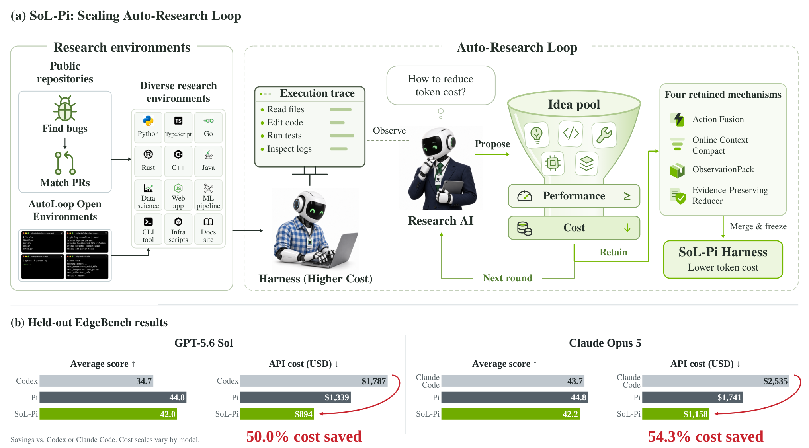
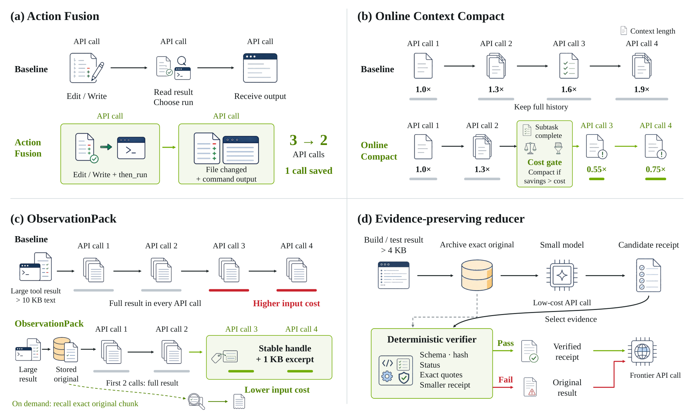

SoL-Pi: Scaling Auto-Research Loops to Discover a Token-Efficient Agent Harness (NVIDIA)
TL;DR
- SoL-Pi (arXiv 2609.20519; Haozhe Liu, Tian Ye, Sensen Gao, … Enze Xie, Song Han — NVIDIA per the thread) points a recursive-self-improvement loop at the harness instead of the model, and at token efficiency instead of score. A research agent reads Pi's execution traces, proposes harness changes, and tests them across 535 executable environments; ~152 directions, >3,000 runs and >60,000 agent–environment interactions later, four mechanisms survive two pre-declared gates (every capability metric within tolerance, at least one efficiency metric improved).
- The survivors are small systems ideas, not new prompts: Action Fusion (edit + follow-up command in one tool call), Online Context Compact (compaction gated by a cache-cost model at plan-step boundaries), ObservationPack (large tool outputs become a handle + 1 KB excerpt after two requests), Evidence-Preserving Reducer (a cheaper model turns build/test logs into verified "receipts"). Stacked on Pi with GPT-5.6 Sol on EdgeBench they cut recorded token traffic 49.0% and API cost 33.2% while keeping 93.7% of Pi's score (42.0 vs 44.8); the frozen stack transfers to Opus 5 with no further search (−44.7% tokens, −33.5% cost, 94.3% of score).
- The methodological claim matters more than the dollar figures: with search feedback strictly separated from a frozen held-out benchmark, harness auto-research yields mechanisms that transfer across tasks (Terminal-Bench 4, IMO 2026 Lean proofs, a kernel-optimization swarm) and across backends — the property that the tracker's harness-evolution critiques kept finding absent.
Why this matters
Harness evolution has had a credibility problem in this tracker. Rethinking the Evaluation of Harness Evolution argued that most reported gains are repeated sampling plus eval-set adaptation; Harness Delta Attribution decomposed evolved-harness gains into generalization, overfitting and compute and found a lot of the latter two; No Universally Best Harness showed rankings flip across model–problem pairs. Meta-Harness and HarnessCompass answered with held-out transfer tables and admissibility gates. SoL-Pi is the scaled, industrial version of that answer: hundreds of environments instead of a handful, a hard isolation boundary around the evaluation set, and an objective (tokens) that is much harder to win by memorizing tasks than accuracy is.
The second reason to care is the framing of why efficiency is the target. Once agents run unattended around the clock — auto-research, self-evolving assistants, early RSI — token cost per task becomes the binding constraint on how much search a fixed budget buys. The paper's closing vision, "recursive efficient improvement," is that a cheaper harness lowers the cost of the auto-research that builds its successor, so efficiency is both the output of harness research and the resource that funds the next round. They are explicit that this is a vision, not a demonstrated compounding effect.
The core idea
Frame harness improvement as constrained search. Before anything runs, the team fixes a set of capability metrics \( \mathcal{C} \) with tolerances \( \tau_m \), a set of efficiency metrics \( \mathcal{E} \), and an acceptance rule, and puts all of them outside the optimizing agent's reach. A candidate harness \( h \) is admitted only if
where \( h_0 \) is base Pi; among admitted candidates the pipeline keeps the non-dominated set under the declared metrics. (Reconstructed from the prose — the paper states the two sequential gates and the Pareto retention in words, not symbols.)
The reported efficiency number is cost per unit of aggregate score,
with token traffic split into input, cache-read, cache-write and output so that the cache economics of compaction are visible rather than hidden.
The isolation boundary is the load-bearing design choice. EdgeBench (51 public tasks of 134) never enters the search: 11 tasks serve as a one-way acceptance check on frozen candidates, the remaining 40 are for final evaluation, and a failed held-out check rejects a candidate without triggering more optimization. That is precisely the discipline the harness-evolution critiques asked for.

Figure 1 from the paper: (a) the Scaling Auto-Research Loop — research environments feed an agent running the base harness, a research AI reads its traces and proposes changes, capability and efficiency gates filter the idea pool, and four retained mechanisms are integrated into SoL-Pi before the harness is frozen for held-out evaluation; (b) EdgeBench score vs API cost for Codex, Claude Code, Pi and SoL-Pi.How it works
Broad-to-deep search. An outer stage proposes 152 directions across six families (context, progress, tools, delegation, prompt and policy, improvement and evaluation). An "Oracle Analysis" pass first mines existing trajectories for avoidable work; each direction must name a concrete overhead and a harness change to remove it. Each selected direction then becomes an independent, disposable search lineage: a copy of a shared skill template with a minimal research loop, so a dead lineage cannot contaminate the others.
Inner loop. Each lineage runs the standard autoresearch cycle (propose → implement → fixed experiment → inspect → retain/revise/discard), extended with a Ralph-loop-style implementation loop: an implementer refines until an explicit completion criterion is met, an independent reviewer checks it, failed reviews trigger revision. Per-trajectory analyzers each inspect one run for repeated actions, context growth, oversized observations or sparse diagnostics; a reducer folds their findings into a candidate-level summary that drives the next proposal.
Environments. 495 repository tasks built from GitHub issue–PR pairs (pre-fix repo state, offline deps, hidden regression test verified to fail before the accepted patch and pass after) plus 40 verifier-driven synthetic tasks with a Terminal-Bench-2-style interface, where a verifier is generated first and the task built around it so multiple solution paths count.
# SoL-Pi auto-research funnel (paraphrased from Sec. 2)
freeze capability metrics C, tolerances tau, efficiency metrics E, acceptance rule
hold out EdgeBench entirely (11 tasks: one-way acceptance, 40 tasks: final eval)
D <- OracleAnalysis(base traces) # 152 directions, 6 families
for each direction d in D (isolated lineage, disposable template):
cand <- propose(d)
repeat:
cand <- implement_until_done(cand) # Ralph-loop implementer
if not independent_review(cand): revise; continue
traj <- run(cand, dev_envs) # subset of 535 envs
findings <- reduce(analyzers(traj)) # repeated actions, context growth, ...
decide retain / revise / discard from findings
until retained or discarded
retained <- {c : all m in C within tau AND some e in E improved}
retained <- pareto_front(retained)
SoL_Pi <- integrate(retained); tune hyperparams under capability constraint
freeze(SoL_Pi); evaluate once on held-out; never feed results back
The four mechanisms (Figure 4 in the paper):
- Action Fusion. Pi tends to edit a file and then issue a separate command to test or build. Fusion attaches an optional follow-up command to file-mutation tools and returns both outcomes in one observation, deleting one model round trip. Prompt-only triggering proved unreliable, so the agent extended the tool schema to expose the fused action directly.
- Online Context Compact. At each plan-step completion the harness estimates remaining requests from observed request-per-step rates and unfinished steps, caps it by how many requests would fill the window at the observed growth rate, and compacts only if projected input savings beat the estimated prompt-cache rewrite cost; later compactions must also cover unrecovered rewrite cost. Roughly, compact when \( \hat N_{\text{rem}} \cdot (L_t - L_{\text{after}}) \cdot c_{\text{read}} \gtrsim L_t \cdot c_{\text{write}} + \text{unrecovered} \), with \( L \) context length and \( c \) the per-token cache read/write prices (my reconstruction of the gate; the paper says the gate uses the cache write/read price ratio and does not price the summarization call).
- ObservationPack. Tool results over 10 KiB are archived locally and sent in full for the next two provider requests; from the third request on they are replaced by a stable handle, original size, and a short head/tail excerpt, with exact pages retrievable on demand.
- Evidence-Preserving Reducer. Build and test logs ≥ 4 KiB from a fixed command set are handed to GPT-5.6 Luna, which extracts key evidence into a compact receipt; a deterministic verifier checks schema, source hash, exit status, exact quotes and size, and falls back to the raw log on any failure, suspected credentials, or no size reduction. ObservationPack recognizes receipts and skips them.
Results
EdgeBench, GPT-5.6 Sol (search backend), from Table 1:
| Harness | Total tokens (B) | Cost ($) | Avg score | $/score |
|---|---|---|---|---|
| Codex | 3.05 | 1,787 | 34.7 | 1.009 |
| Pi | 2.15 | 1,339 | 44.8 | 0.586 |
| SoL-Pi [Efficiency] (all four) | 1.10 | 894 | 42.0 | 0.417 |
| SoL-Pi [Performance] (ObservationPack only) | 2.02 | 1,271 | 47.2 | 0.528 |
Opus 5 (held-out backend, no re-search): Claude Code $2,535 / 43.7; Pi $1,741 / 44.8; SoL-Pi [Efficiency] $1,158 / 42.2; SoL-Pi [Performance] (Action Fusion only) $1,605 / 50.5. Every single mechanism reduces total tokens under both backends, but which one scores best flips between backends, and trigger rate and intensity are both lower under Opus 5 — the harness was tuned on GPT-5.6 Sol trajectories only.
Elsewhere: on 63 CPU-only Terminal-Bench 4 tasks, Codex and Pi each solve 18, SoL-Pi 15, at $211 total vs $286 for Pi ($14.07 vs $15.91 per solved task). On IMO 2026 with Lean 4 verification, SoL-Pi and Pi each pass 3 of 6 (Codex 5), SoL-Pi cheapest per pass ($20.90). In a two-hour kernel-optimization swarm (Codex coordinator + 20 workers), SoL-Pi workers reach 1,127 cycles at $60.11 vs the Pi swarm's 1,366 cycles at $82.12 and a lone Codex agent's 1,333 at $39.20 — the swarm is 26.8% cheaper than the Pi swarm and clears all eight speed thresholds where the Pi swarm misses the last.
The Action Fusion case study (27 iterations, four stages) is the most instructive figure: oracle analysis projected an 11.5% token reduction under full triggering, prompt-only triggering failed, the agent changed the tool schema, then invented an intermediate metric (trigger rate) to optimize alongside task score before freezing.

Figure 2 from the paper: execution trajectories guide mechanism proposals and implementation; independent review and development validation inform revisions; held-out evaluation happens only after the candidate is frozen and never feeds back.How it connects
- Meta-Harness and HarnessCompass — the direct ancestors (both cited). Meta-Harness searches harness code with full trace access; HarnessCompass gates edits for generalizability. SoL-Pi keeps both ideas and adds scale (535 envs) plus a token objective.
- Rethinking the Evaluation of Harness Evolution — cited as ref [20]: the paper's isolation design (frozen candidates, one-way acceptance, held-out never fed back) is a point-by-point response to that critique. Harness Delta Attribution (tracked, no tutorial) is the other lens to apply here.
- Recursive Harness Self-Improvement — RHI refines per-task loop specifications; SoL-Pi explicitly rejects per-task optimization in favor of mechanisms that survive many environments.
- An Empirical Study of Harness Design for Coding Agents (tracked today) — the controlled-ablation complement: it finds rule-based elision before summarization is the best context strategy and that recoverable elided content is rarely recalled. ObservationPack is exactly "elision with recall," and SoL-Pi's gate on compaction is the missing cost model in that study.
- Pi Dev Notes: Prune+Spill (tracked) and Agentic Context Management — ObservationPack is Pi's prune-and-spill pattern rediscovered by search; Task Completion Hides Compaction Cost (tracked) is the warning that compaction can inflate retrieval calls, which the cache-cost gate is designed to catch.
- EdgeBench (tracked, ByteDance) — the held-out benchmark; note only 51 of 134 tasks are public.
Critical take
"Comparable performance" is doing work: the Efficiency point gives up 2.8 EdgeBench points on GPT-5.6 Sol and 2.5 on Opus 5, and solves three fewer Terminal-Bench 4 tasks than Pi. The honest summary is a cost–capability trade, with a good exchange rate. The Performance points are more suspicious: they are single mechanisms chosen per backend as the best-scoring row of the EdgeBench add-one table — that is selection on the evaluation set, however mild, and it sits uneasily next to the paper's own insistence on isolation.
The four mechanisms are also not new. Prune-and-spill, cache-aware compaction, delegated log summarization and fused edit-and-run are all in production harnesses and dev notes; what SoL-Pi shows is that a search process can rediscover and correctly gate them without a human, which is a different (still valuable) claim than discovering novel harness ideas. The token-efficiency objective is the reason the result is credible — it is much harder to overfit tokens than accuracy — but it also means the search never had to find anything that raises capability.
Costs of the search itself are not reported, which matters for a paper whose thesis is that efficiency compounds. Single search backend, dollar figures pinned to August-2026 API prices, no scaling curve over breadth or depth (the authors say so). The "pretraining the harness" analogy is attractive but currently rests on one frozen artifact evaluated on one held-out benchmark plus two small transfer checks.
If you remember three things
- Point the RSI loop at the harness and at tokens, not score: gates are pre-declared, the evaluation set is frozen and one-way, and candidates are Pareto-filtered — this is what a defensible harness-evolution result looks like.
- Four rediscovered mechanisms (fused actions, cost-gated compaction, observation handles, verified log receipts) give ~45–49% fewer tokens and ~one-third lower cost at ~94% of Pi's score, and transfer from GPT-5.6 Sol to Opus 5 unchanged.
- Search breadth (535 envs, 152 directions) plus strict isolation is the claimed cure for evolved-harness overfitting; the evidence is preliminary, the search cost is unreported, and the "Performance" configurations are selected on the eval set.